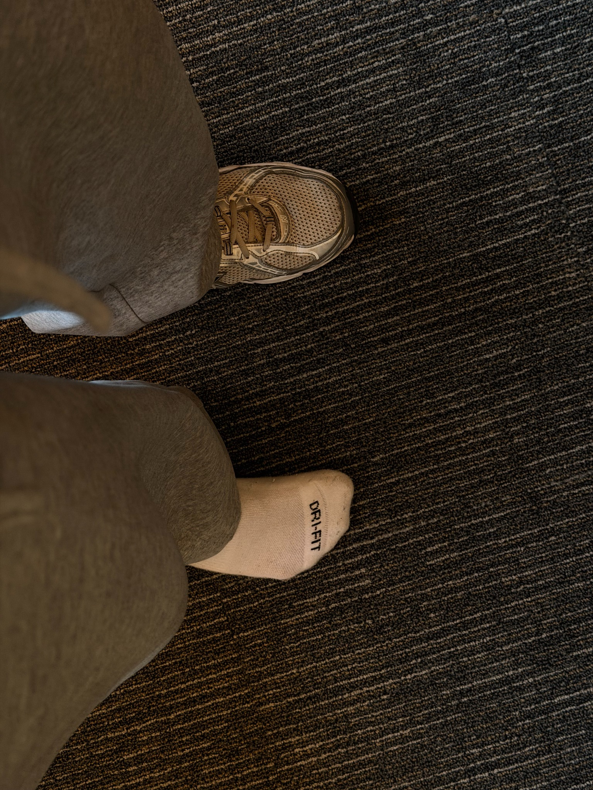
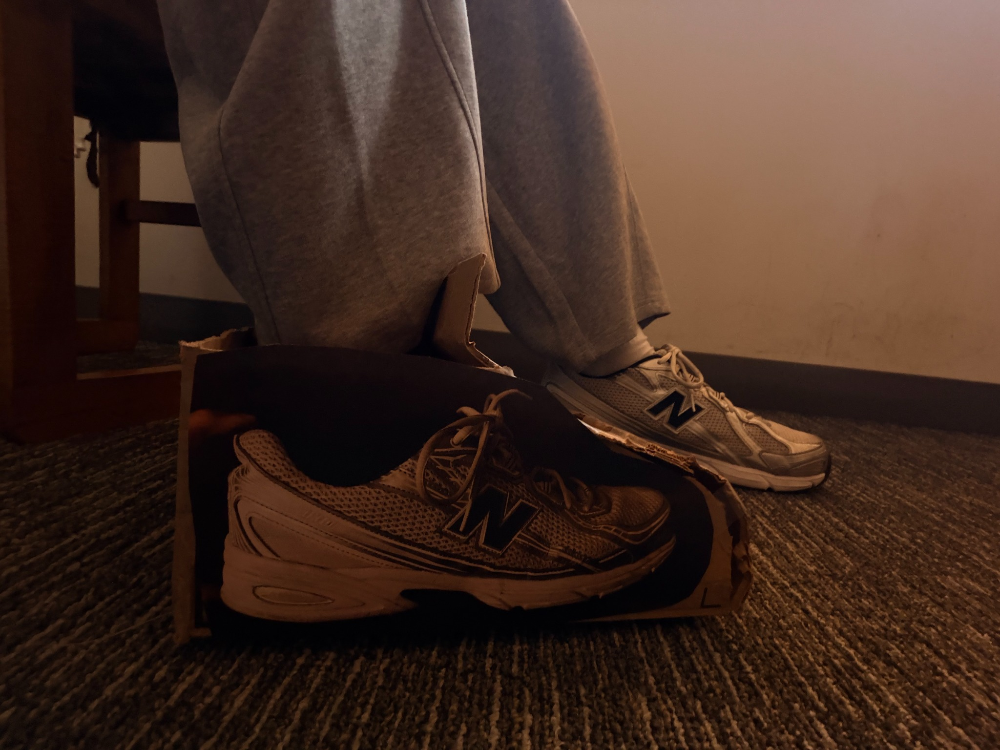
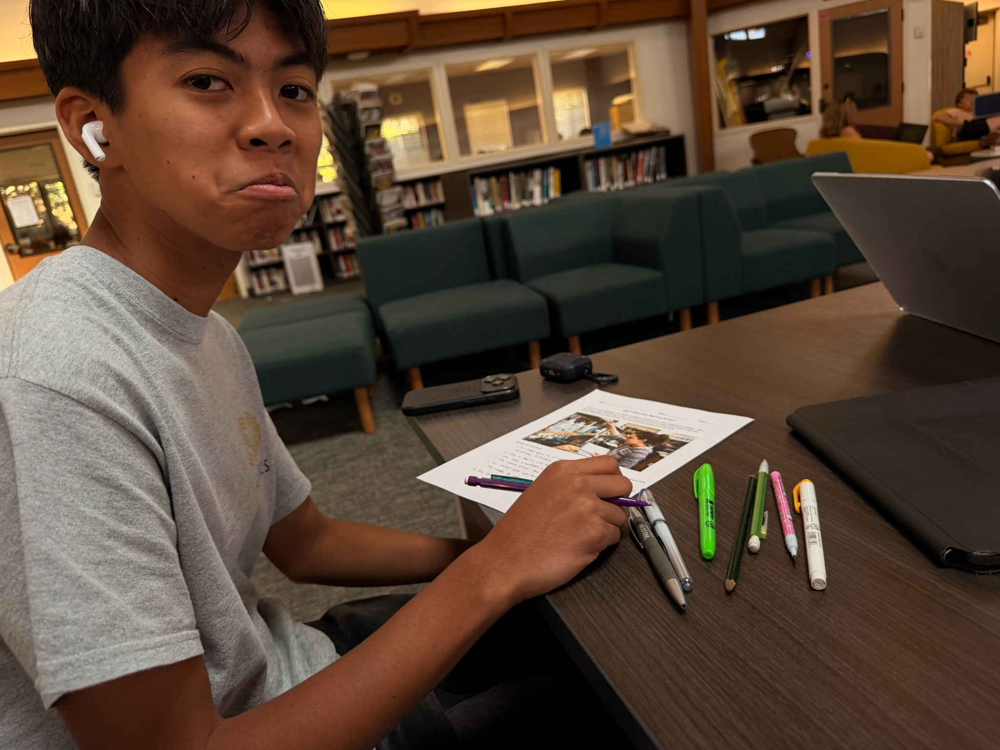
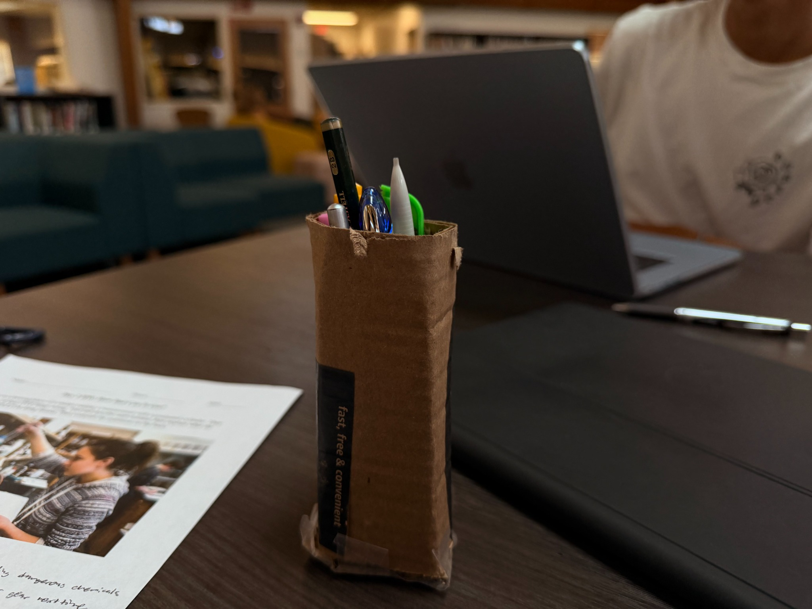
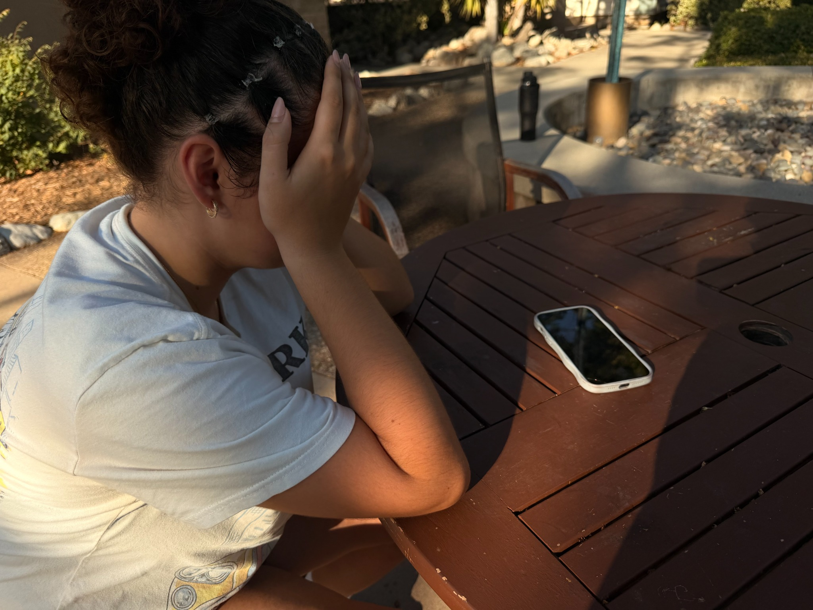

Activity Gallery
8 photos
Photo 1
When I was changing for functional fitness I lost my shoe. No matter how hard I searched I could not find my lost shoe.

Photo 2
So, I decided to make my own out of cardboard. Now I was able to go to functional!

Photo 3
I walked into the library and saw my friend Matthew looking sad. He was trying to do his homework but was unable to because his writing utensils were spilled all over the table.

Photo 4
So, I made him a pencil holder out of cardboard. Now he had a place to neatly store his tools and was able to finish his work!

Photo 5
I was sitting at my desk with my books out and realized I needed somewhere to store them. They were cluttering up my workspace!

Photo 6
So, I made a book holder out of cardboard. Now I had a place to neatly store my books!

Photo 7
I was walking by the Old School House when I saw my friend Alyssa trying to watch a show on her phone. She was frustrated because she had no way of holding her phone comfortably.

Photo 8
So, I made her a phone stand out of cardboard. She was thrilled to be able to watch her show now!